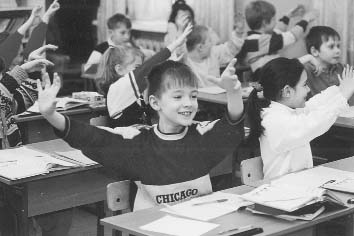
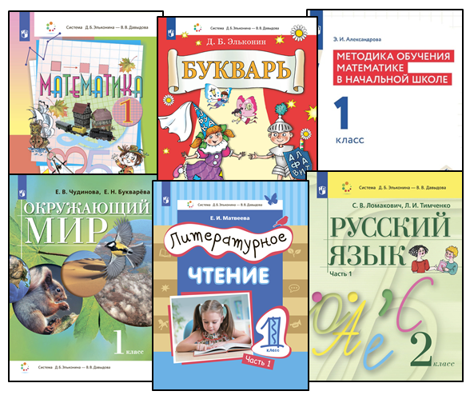

Система развивающего обучения
Цели и особенности системы Эльконина—Давыдова

Цель системы — научить детей самостоятельно ставить задачи, определять методы их решения и анализировать результат. Особенность этой системы заключается в том, что знания не даются детям в готовом виде. Обучение организовано так, чтобы школьники смогли самостоятельно поставить задачу, предложить способы её решения, а затем критически оценить то, что получилось. Основные формы деятельности на уроках — дискуссия и эксперимент.
Работа на уроках идёт в парах или небольших группах. Учитель ставит перед классом проблему и предлагает каждой группе найти решение. При этом он корректирует работу учеников наводящими вопросами.
В традиционной системе часто детей делят на «способных» и «отстающих». И парадокс в том, что тем, кому и так сложно, дают ещё меньше возможностей для настоящего интеллектуального роста. Развивающее обучение Эльконина—Давыдова ставит во главу развитие каждого ребёнка в классе. Оно достигается через углубленную индивидуальную работу, диалог, дискуссии (в том числе групповые), где каждый голос важен.
Считается, что учиться по Эльконину — Давыдову может каждый. На семейном обучении эта программа подойдёт родителям, готовым стать научными коллегами для своего ребёнка. Придётся много дискутировать и следить за тем, чтобы ученик получал не «готовые знания», а находил ответы самостоятельно.

Развивающее обучение идет неизмеримо дальше: оно растит в детях рефлексивные способности (рефлексивный анализ, оценка и контроль). Это не просто «понимание материала», а понимание самого процесса своего познания.
В Санкт-Петербурге дети могут обучать по этой системе в начальной школе:
- ГБОУ СОШ №57
- ГБОУ СОШ №283
- Начальная школа – детский сад №283